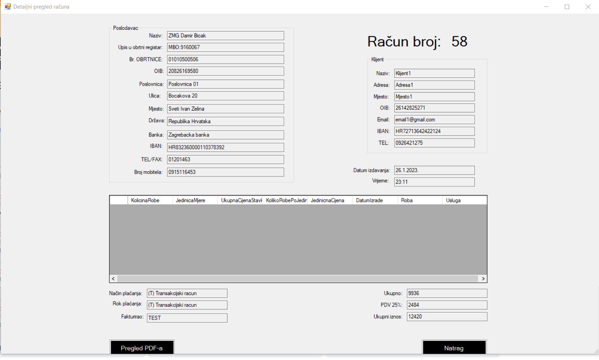

Ovo je forma koja se otvara kada na formi Računi kliknete na gumb detaljni pregled. Prije toga morate odabrati jedan račun za detaljno pregledavanje. Uglavno ono što je dodatno u tome pregledu je vrijeme izdavanje računa i tko je fakturirao račun. Također, imate opciju pregledavanja tog računa u PDF-u. Taj PDF je u biti detaljni račun.
